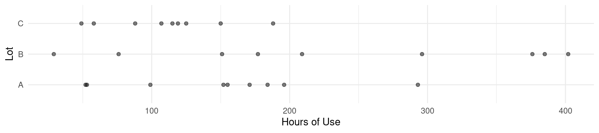
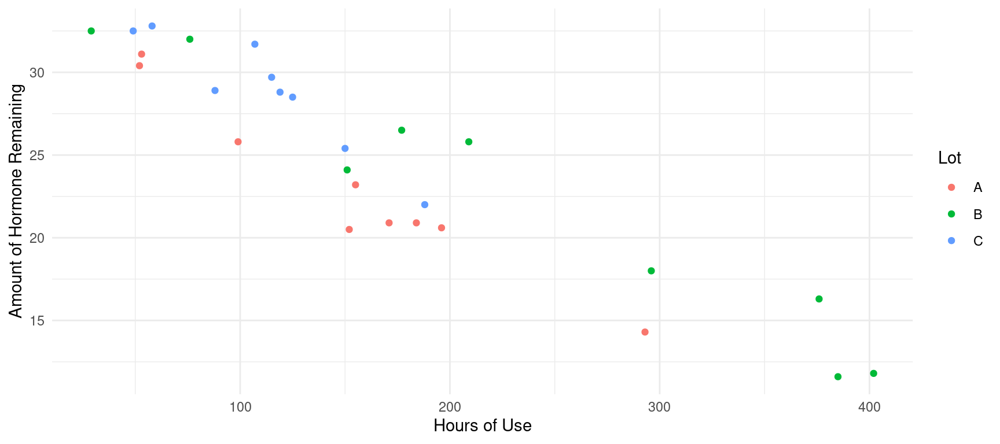
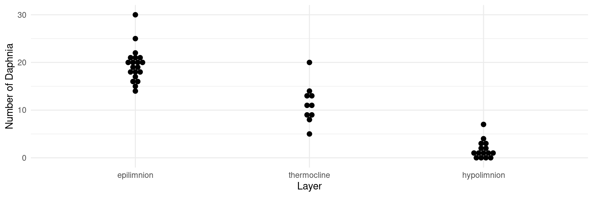

Linear Model Specification and Interpretation
Statistics 516, Homework 1
You can also download a PDF copy of this homework assignment.
This homework assignment concerns specifying and the interpreting (via inference) linear models using data from several studies. In particular, you will see how to make inferences concerning linear combinations of model parameters. You will likely need to install several packages to access the data. These include the bootstrap and agridat packages, as well as the trtools and ggplot2 packages which you should have already installed.
Instructions
This assignment is due by 5:00 PM on Wednesday, February 9th. Email me your homework at trjohns@uidaho.edu. If possible, save/export your homework as a PDF file. Late assignments will be penalized by 10% if turned-in within 12 hours of the deadline, and 10% more for each additional 12 hour interval.
Your solutions must be typed and very neatly organized. I will not try to infer your solutions if they are not clearly presented. Mathematical expressions need not be typeset perfectly but they should be clear. You may substitute letters for symbols (e.g., b1 for \(\beta_1\)) and use other shortcuts for mathematical notation if no meaning is lost.
You must include with your solutions the relevant R output and R code that created them. Be sure that you provide sufficient code that I can replicate your results. Include both the code and the output within the text of your solutions (not in an appendix) using cut-and-paste. But edit your output so as to provide only that which is relevant to answering the questions. Use a monospace font (e.g., Courier or Monoco) for R code and output for clarity. Do not use a monospace font for text that is not R code or output.
Plots from R Studio can be exported in various formats or directly to the clipboard using the “export” menu in the top-left part of the plot panel.
It is permitted for you to discuss the homework with other students in the course. However your work including R code, output, and written answers must be your own.
You are very welcome to ask me questions. I will be happy to clarify what I am asking in any of the questions and will provide you some help with solving problems by showing you how to work through similar problems from class. I will also be open to helping with any R problems. If you email me with a R question, it will usually be helpful for you to include enough of your R script so that I can replicate your issue. But please avoid saving all your questions for just before the assignment is due. I can usually respond quickly to questions, but I will sometimes need time to respond.
Bumpus’ Sparrows
A famous lecture by biologist Hermon Bumpus demonstrated natural selection using data concerning the survival of house sparrows (Passer domesticus) after a severe winter storm.1 After the storm, moribund sparrows were brought to the Anatomical Laboratory at Brown University. Some of these sparrows were revived, but many died. All of the sparrows that were brought in were examined with respect to a variety of anatomical characteristics. It is interesting to compare the anatomical characteristics of sparrows that survived versus those that did not. Dot plots showing the distributions of humerus (upper wing bone) length in the samples of sparrows that survived and the sparrows that did not are shown below.2
library(trtools)
library(ggplot2)
bumpus$survived <- factor(bumpus$survival,
levels = c(TRUE,FALSE), labels = c("yes","no"))
p <- ggplot(bumpus, aes(x = survived, y = humerus)) + theme_minimal() +
geom_dotplot(binaxis = "y", binwidth = 0.001) + coord_flip() +
labs(x = "Survived", y = "Humerus Length (in)")
plot(p) Note that I created a new variable
Note that I created a new variable survived from the survival variable. This is not necessary, and you could use the original survival variable. I did it to change the labels to “yes” and “no”.3 The following code shows how you can use the dplyr package to compute the sample means, standard deviations, and sizes for the two samples of sparrows.4
library(dplyr)
bumpus %>% group_by(survived) %>%
summarize(ybar = mean(humerus), sd = sd(humerus), n = n())# A tibble: 2 × 4
survived ybar sd n
<fct> <dbl> <dbl> <int>
1 yes 0.736 0.0203 72
2 no 0.727 0.0252 64So the sample means for the observations of non-surviving and surviving sparrows are \(\bar{y}_n\) = 0.727 and \(\bar{y}_y\) = 0.736, respectively, the sample standard deviations are \(s_n\) = 0.0252 and \(s_y\) = 0.0203, respectively, and the sample sizes are \(n_n\) = 64 and \(n_y\) = 72, respectively. Note that the sample means and standard deviations are rounded.5 Let \(\mu_n\) and \(\mu_y\) be the “population means” for humerus length for non-surviving and surviving sparrows, respectively, or what we would call the expected humerus lengths.6 In an introductory statistics course you learned a variety of ways to make inferences using data like these. You learned how to compute a confidence interval for \(\mu_y - \mu_n\) such as \[ \bar{y}_y - \bar{y}_n \pm ts_p\sqrt{1/n_y + 1/n_n}, \] where \[ s_p = \sqrt{\frac{(n_y-1)s_y^2 + (n_n-1)s_n^2}{n_y + n_n - 2}}, \] is the “pooled” estimate of \(\sigma\), the standard deviation of humerus length, and \(t\) is a value from the t-distribution with \(n_y + n_n - 2\) degrees of freedom that is used to specify the confidence level.7 The test statistic for a “t-test” of the null hypothesis that \(\mu_y - \mu_n\) = 0 (i.e, \(\mu_y = \mu_n\)) is \[ t = \frac{\bar{y}_y - \bar{y}_n}{s_p\sqrt{1/n_y + 1/n_n}}. \] If you were to compute the confidence interval and test statistic using the formulas above you would get a confidence interval (with a 95% confidence level) for \(\mu_y - \mu_n\) of approximately (0.001 in, 0.016 in) and a test statistic for the null hypothesis \(\mu_y - \mu_n\) = 0 of approximately t = 2.175. Here you will see how to make these inferences and others using a linear model.
Estimate a linear model using the
lmfunction with humerus length as the response variable and survival as the explanatory variable. Report the parameter estimates and their standard errors using thesummaryfunction.The model you estimated in the previous problem can be written as \[ E(Y_i) = \beta_0 + \beta_1 x_i, \] where \(Y_i\) is the \(i\)-th observation of humerus length. Explain how the value of \(x_i\) is defined for this model (i.e., how would you determine the value of \(x_i\) for a given sparrow?). Write the model case-wise to express the expected humerus length as a function of \(\beta_0\) and \(\beta_1\) for sparrows that survived and those that did not. Let \(\mu_y\) and \(\mu_n\) be the expected humerus length of a sparrow that did and did not survive, respectively. Using the case-wise representation of the model, write each of these parameters as a function of \(\beta_0\) and/or \(\beta_1\) (i.e., how would you compute \(\mu_y\) and \(\mu_n\) using \(\beta_0\) and \(\beta_1\)?).
Using the
linconandcontrastfunctions, produce estimates, standard errors, and confidence intervals for \(\mu_y\) and \(\mu_n\). For thelinconfunction, use the fact that each of these parameters can be written as a function of \(\beta_0\) and/or \(\beta_1\). Note that the results fromlinconandcontrastshould be the same.8Using the
linconandcontrastfunctions, produce an estimate, standard error, and confidence interval for \(\mu_y - \mu_n\), as well as the test statistic and p-value for a test of the null hypothesis that \(\mu_y - \mu_n\) = 0. Note that the results fromlinconandcontrastshould be the same. Also note that your confidence interval and test statistic should be the same as those shown in the problem description above.
Anti-Inflammatory Hormone Devices
For this problem you will be using the data frame hormone from the bootstrap package. The data are from a fictional study of devices for delivering anti-inflammatory hormones. The primary goal of the study is compare devices from three different manufacturing lots with respect to the amount of hormone remaining in the devices after use. The plot below shows the distribution of hormone remaining for the devices from the three lots.
library(bootstrap)
library(ggplot2)
p <- ggplot(hormone, aes(x = Lot, y = amount)) + theme_minimal() +
geom_point(alpha = 0.5) + coord_flip() + labs(y = "Amount Remaining")
plot(p) The following shows the mean for amount remaining by lot.
The following shows the mean for amount remaining by lot.
library(dplyr)
hormone %>% group_by(Lot) %>% summarize(ybar = mean(amount))# A tibble: 3 × 2
Lot ybar
<chr> <dbl>
1 A 23.1
2 B 22.1
3 C 28.9The goal here is to make inferences about the expected amount of hormone remaining for devices from the three manufacturing lots.
Estimate a linear model using the
lmfunction where the response variable is the amount of hormone remaining and the explanatory variable is lot. Report the parameter estimates and standard errors using thesummaryfunction.The model you estimated in the previous problem can be written as \[ E(Y_i) = \beta_0 + \beta_1x_{i1} + \beta_2x_{i2}, \] where \(Y_i\) is the \(i\)-th observation of the amount of hormone remaining. Explain how \(x_{i1}\) and \(x_{i2}\) are defined for this model (i.e., how would you determine their values for a given device?). Then write the model case-wise to show how the expected amount of hormone remaining for each lot can be written as a function of \(\beta_0\), \(\beta_1\), and/or \(\beta_2\).
Using the
contrastandlinconfunctions, produce estimates, standard errors, and confidence intervals for the expected amount of hormone remaining for each lot. Note that the results fromlinconandcontrastshould be the same.Using the
contrastandlinconfunctions, produce estimates, standard errors, and confidence intervals for the difference in the expected amount of hormone remaining between lot C and B, lots C and A, and between lots A and B. Note that the results fromlinconandcontrastshould be the same.The model and analyses in the previous problems fails to take into account that devices in the three lots tended to have different amounts of use as can be seen in the following.
p <- ggplot(hormone, aes(x = Lot, y = hrs)) + theme_minimal() + geom_point(alpha = 0.5) + coord_flip() + labs(y = "Hours of Use") plot(p)
hormone %>% group_by(Lot) %>% summarize(wear = mean(hrs))# A tibble: 3 × 2 Lot wear <chr> <dbl> 1 A 151. 2 B 233. 3 C 111As can be seen in the plot and in the descriptive statistics, the devices from lot C had, on average, the least hours of use, while devices from lot B tended to have the most hours of use. We can view the relationship among all three variables in the following plot.
p <- ggplot(hormone, aes(x = hrs, y = amount, color = Lot)) + theme_minimal() + geom_point() + labs(x = "Hours of Use", y = "Amount of Hormone Remaining") plot(p) There is nothing statistically incorrect about the model used in the previous problem, but it may not be useful since it does not allow for a “fair” comparison between the lots since the devices in the lots differ across lots with respect to use. A more useful comparison would be to compare the expected amount of hormone between the lots while “controlling for” hours of use — i.e., what is the difference in the expected amount of hormone for devices from different lots but with the same amount of use? Estimate a linear model with amount of hormone remaining as a response variable and both lot and hours of use as explanatory variables. Do not include an “interaction” term in your model so that the rate of change in expected amount of hormone with respect to amount of use is the same for each lot. Report the parameter estimates and their standard errors using the
summaryfunction, parameter confidence intervals using theconfintfunction, and plot the estimated expected amount of hormone remaining as a function of hours of use and lot by extending the code given above. Note that this will require you to create an artificial data set using theexpand.gridfunction for different combinations of hours of use and lots. For the hours of use variable, have your values go from 29 to 402 hours, which are the smallest and largest values observed in the data.The model you estimated in the previous problem can be written as \[ E(Y_i) = \beta_0 + \beta_1x_{i1} + \beta_2x_{i2} + \beta_3x_{i3}. \] Explain how \(x_{i1}\), \(x_{i2}\), and \(x_{i3}\) are defined (i.e., how would you determine their values for a given device). Then write the model case-wise to show how the expected amount of hormone remaining can be written as a function of \(\beta_0\), \(\beta_1\), \(\beta_2\), \(\beta_3\), and hours of use for each lot.
Use the
contrastfunction to estimate (a) the expected amount of hormone remaining in a device from each of the three lots that has had 200 hours of use, and (b) the difference in the expected amount of hormone remaining between lot C and B, lots C and A, and between lots A and B, when the hours of use is 200 hours. Comment briefly on how your comparisons between the lots in (b) compare to what you found earlier when you did not control for hours of use.In the model used in the previous questions with hours of use as an explanatory variable with lot, one of the \(\beta_j\) parameters in the model is the rate of change in the expected amount of hormone remaining with respect to hours of use (i.e., the change in the expected amount of hormone remaining for a one hour increase in use). Because of how the model was specified, this is the same for the three lots. Now use the
contrastfunction to estimate this same quantity for each lot. You should obtain the same estimate, standard error, confidence interval, and test statistic as for the corresponding \(\beta_j\) parameters as shown bysummaryandconfint, and these should be the same for each lot. Also use thecontrastfunction to estimate the change in the expected amount of hormone remaining for a 100 hour increase in use. Note that your estimate, standard error, and confidence interval endpoints should be 100 times what you found for a one hour increase, but the test statistic should be the same.Consider the following model “formula” argument for the
lmfunction:amount ~ 1 + Lot:hrs. It may not be clear exactly what kind of model this specifies, but you can deduce the model from the output fromsummary. Estimate this model and give the parameter estimates and their standard errors using thesummaryfunction. Also plot the model with the raw data like you did with the previous model. This model can be written as \[ E(Y_i) = \beta_0 + \beta_1x_{i1} + \beta_2x_{i2} + \beta_3x_{i3}, \] but now \(x_{i1}\), \(x_{i2}\), and \(x_{i3}\) are different from what they were in the previous model, and so \(\beta_0\), \(\beta_1\), \(\beta_2\), and \(\beta_3\) have different interpretations as well. Explain how \(x_{i1}\), \(x_{i2}\), and \(x_{i3}\) are defined for this model (i.e., how would you determine their values for a given device). Write the model case-wise to show how the expected amount of hormone remaining can be written as a function of \(\beta_0\), \(\beta_1\), \(\beta_2\), \(\beta_3\), and hours of use for each lot. Use thecontrastfunction to estimate (a) the expected amount of hormone remaining in devices from each lot after zero hours of use, and after 200 hours of use, and (b) the change in the expected amount of hormone for a one hour increase in the amount of use for each lot. Compare these estimates to the parameter estimates fromsummary, and briefly discuss how one would interpret the parameters \(\beta_0\), \(\beta_1\), \(\beta_2\), and \(\beta_3\) in terms of the relationship between expected hormone remaining as a function of lot and hours of use. Note: This problem is extra credit for students enrolled in Stat 436, but is required for students enrolled in Stat 516.
Daphnia Survey
The data in the data frame daphniastrat from the trtools package are from a survey of daphnia (water fleas) in a fresh water lake.9 Researchers obtained one-liter samples of water from three depth layers: the epilimnion (the warmer surface layer), the thermocline (the middle layer between the warmer and colder layers), and the hypolimnion (the colder bottom layer). The number of daphnia within each water sample was then recorded. A plot of the raw data is shown below.
library(ggplot2)
library(trtools)
p <- ggplot(daphniastrat, aes(x = layer, y = count)) + theme_minimal() +
geom_dotplot(binaxis = "y", stackdir = "center") +
labs(x = "Layer", y = "Number of Daphnia")
plot(p) Some descriptive statistics of the number of daphnia for each layer can be obtained as follows using the dplyr package.
library(dplyr)
daphniastrat %>% group_by(layer) %>%
summarize(mean = mean(count), sd = sd(count), samples = n())# A tibble: 3 × 4
layer mean sd samples
<fct> <dbl> <dbl> <int>
1 epilimnion 19.5 3.58 20
2 thermocline 11.3 4.08 10
3 hypolimnion 1.73 1.91 15The following concern inferences about the daphnia within each layer and in the entire lake.
Specify a linear model using the
lmfunction with count as the response variable and layer as the explanatory variable. Report the parameter estimates using thesummaryfunction. Let \(\mu_e\), \(\mu_t\), and \(\mu_h\) represent the expected number of daphnia in one liter of water sampled from the epilimnion, thermocline, and hypolimnion layers, respectively. If we assume simple random sampling of the one liter samples from each layer, then \(\mu_e\), \(\mu_t\), and \(\mu_h\) then also represent the mean number of daphnia for epilimnion, thermocline, and hypolimnion layers, respectively (i.e., the daphnia density in each layer). Write each of these parameters as a function of \(\beta_0\), \(\beta_1\), and/or \(\beta_2\).The volumes of the epilimnion, thermocline, and hypolimnion layers are 100kL, 200kL, and 400kL, respectively, so the volume of the lake as a whole is 700kL or 700000 liters. The mean number of daphnia per liter for the whole lake, denoted here as \(\mu\), is therefore the weighted average of the mean number of daphnia per liter from each layer computed as \[ \mu = \tfrac{1}{7}\mu_e + \tfrac{2}{7}\mu_t + \tfrac{4}{7}\mu_h. \] The total number of daphnia in the lake, which we might represent as the parameter \(\tau\), is equal to 700000\(\mu\), so that \[ \tau = 100000\mu_e + 200000\mu_t + 400000\mu_h. \] In the previous problem you expressed \(\mu_e\), \(\mu_t\), and \(\mu_h\) as functions of the parameters \(\beta_0\), \(\beta_1\), and \(\beta_2\). In the expressions for \(\mu\) and \(\tau\) above, substitute \(\mu_e\), \(\mu_t\), and \(\mu_h\) with the corresponding function of \(\beta_0\), \(\beta_1\), and \(\beta_2\), and then simplify the expressions so that \(\mu\) and \(\tau\) are then written as linear combinations of \(\beta_0\), \(\beta_1\), and \(\beta_2\). Then use the
linconfunction to compute estimates of \(\mu\) and \(\tau\) as well as confidence intervals for these parameters and the standard errors of the estimators.10In the previous problem you estimated the total number of daphnia in the lake. Now consider the problem of estimating the total number of daphnia in each layer. The total number of daphnia in the epilimnion layer is \(\tau_e\) = 100000\(\mu_e\). Similarly, the total number of daphnia in the thermocline and hypolimnion layers are \(\tau_t\) = 200000\(\mu_t\) and \(\tau_h\) = 400000\(\mu_h\), respectively. Write \(\tau_e\), \(\tau_t\), and \(\tau_h\) as linear combinations of \(\beta_0\), \(\beta_1\), and \(\beta_2\), and use the
linconfunction produce an estimate, standard error, and confidence interval for each parameter.
Germination of Orobanche Seeds
Crowder (1978) featured data from an experiment concerning the parasitic plant Orobanche aegyptiaca (Egyptian broomrape).11 Plates of seeds of two genotypes (O. aegyptiaca 73 and O. aegyptiaca 75) were randomly assigned to be exposed to extract from either bean or cucumber plants (as parasitic plants, the seeds remain dormant until stimulated by the presence of a host plant). The number of germinating seeds out of the number of seeds on the plate was then recorded.12 The data are in a data frame called crowder.seeds in the package agridat.
library(ggplot2)
library(agridat)
crowder.seeds$y <- crowder.seeds$germ / crowder.seeds$n # creating response variable
p <- ggplot(crowder.seeds, aes(y = y, x = extract)) + theme_minimal() +
geom_point(alpha = 0.5) + facet_wrap(~ gen) +
labs(x = "Extract Type", y = "Proportion Germinated")
plot(p) This is a randomized block design where the blocking variable is the genotype and the randomized treatment is extract type. In a classic analysis of variance (ANOVA) of these data, one might investigate the “main effect” of the treatment and perhaps that of the blocking variable, and also the “interaction” between the treatment and blocking variables. Tests of the main effects and interaction are sometimes reported in an ANOVA table like the following.
This is a randomized block design where the blocking variable is the genotype and the randomized treatment is extract type. In a classic analysis of variance (ANOVA) of these data, one might investigate the “main effect” of the treatment and perhaps that of the blocking variable, and also the “interaction” between the treatment and blocking variables. Tests of the main effects and interaction are sometimes reported in an ANOVA table like the following.
Anova Table (Type III tests)
Response: y
Sum Sq Df F value Pr(>F)
(Intercept) 4.6168 1 229.8072 2.618e-11 ***
gen 0.1114 1 5.5454 0.030806 *
extract 0.3087 1 15.3659 0.001103 **
gen:extract 0.0530 1 2.6363 0.122845
Residuals 0.3415 17
---
Signif. codes: 0 '***' 0.001 '**' 0.01 '*' 0.05 '.' 0.1 ' ' 1But unfortunately for students (and some researchers) the understanding of what is a “main effect” or “interaction” are not always well understood. They understand the computational details but not actually what they are testing. But what is really meant by a “main effect” or “interaction” can be made more clear by carefully examining the quantities and hypotheses involved.
Consider the following linear model.
m <- lm(y ~ gen + extract + gen:extract, data = crowder.seeds) summary(m)$coefficientsEstimate Std. Error t value Pr(>|t|) (Intercept) 0.32603175 0.06338720 5.1434949 8.124837e-05 genO75 0.04537425 0.08964304 0.5061659 6.192411e-01 extractcucumber 0.14248981 0.08964304 1.5895245 1.303655e-01 genO75:extractcucumber 0.20150397 0.12410517 1.6236550 1.228453e-01The model has the form \[ E(Y_i) = \beta_0 + \beta_1 x_{i1} + \beta_2 x_{i2} + \beta_3 x_{i3}, \] where \(Y_i\) is the proportion of germinating seeds for the \(i\)-th observation. How are \(x_{i1}\), \(x_{i2}\), and \(x_{i3}\) defined in this model? That is, how would you determine their values for a given observation? Finally, write the model case-wise to show how the expected proportion of germinating seeds can be written as a function of \(\beta_0\), \(\beta_1\), \(\beta_2\), and/or \(\beta_3\). Note that there are four cases: the O73 genotype exposed to bean extract, the O75 genotype exposed to cucumber extract, the O75 genotype exposed to bean extract, and the O75 genotype exposed to cucumber extract.
Let \(\mu_{73,b}\) denote the expected proportion of seeds of the O73 genotype when exposed to the bean extract. Similarly let \(\mu_{73,c}\), \(\mu_{75,b}\), and \(\mu_{75,c}\) denote expected proportion of seeds germinating corresponding to the other three combinations of genotype and extract type. Provide estimates of each of these four expected values with standard errors and confidence intervals using both
linconandcontrast.13So-called “main effects” are based on what are sometimes called marginal means — i.e., the mean expected value obtained by averaging over the levels of the other factor(s). The marginal means for the two extract types are \[ \mu_b = \frac{\mu_{O73,b} + \mu_{O75,b}}{2} \ \ \ \text{and} \ \ \ \mu_c = \frac{\mu_{O73,c} + \mu_{O75,c}}{2}, \] and the marginal means for the two genotypes are \[ \mu_{O73} = \frac{\mu_{O73,b} + \mu_{O73,c}}{2} \ \ \ \text{and} \ \ \ \mu_{O75} = \frac{\mu_{O75,b} + \mu_{O75,c}}{2}. \] Based on your results from the previous problem, write \(\mu_b\), \(\mu_c\), \(\mu_{O73}\), and \(\mu_{O75}\) as linear combinations of \(\beta_0\), \(\beta_1\), \(\beta_2\), and \(\beta_3\) by replacing each \(\mu\) with the corresponding function of \(\beta_0\), \(\beta_1\), \(\beta_2\), and/or \(\beta_3\) and simplifying. Use the
linconfunction to estimate the four marginal means.14The main effect of extract type is defined in terms of the marginal means for extract type. It is defined as \(\mu_c - \mu_b\) (or \(\mu_b - \mu_c)\), and the null hypothesis for a test of the main effect could be stated as \(H_0\!: \mu_c - \mu_b = 0\). Similarly the main effect of genotype is defined as \(\mu_{O75} - \mu_{O73}\) (or \(\mu_{O73} - \mu_{O75}\)), and the null hypothesis for a test of the main effect could be stated as \(H_0\!: \mu_{O75} - \mu_{O73} = 0\). Using your results from the previous problem, write \(\mu_c - \mu_b\) and \(\mu_{O75} - \mu_{O73}\) as linear combinations of \(\beta_0\), \(\beta_1\), \(\beta_2\), and/or \(\beta_3\). Also report the result of a test of the null hypothesis for each main effect using the
linconfunction. If you do this correctly the squared t test statistics and the p-values reported bylinconshould match those shown in the ANOVA table above shown in thegenandextractrows.The definition of an “interaction” in a linear model is that the differences among the expected values over one factor do not depend on the level of the other factor. The null hypothesis for the interaction could be written as \[ H_0\!: \mu_{075,c} - \mu_{075,b} = \mu_{073,c} - \mu_{073,b} \] or, equivalently, \[ H_0\!: \mu_{075,c} - \mu_{075,b} - \mu_{073,c} + \mu_{073,b} = 0. \] Write \(\mu_{075,c} - \mu_{075,b} - \mu_{073,c} + \mu_{073,b}\) as a linear combination of \(\beta_0\), \(\beta_1\), \(\beta_2\), and \(\beta_3\) by replacing each \(\mu\) or each difference between \(\mu\)’s with a function of \(\beta_0\), \(\beta_1\), \(\beta_2\), and/or \(\beta_3\) you found earlier and simplifying. Finally report the results of a test of this null hypothesis using
lincon. If you do this correctly the squared t test statistic and the p-value reported bylinconshould match those shown in the ANOVA table above shown in thegen:extractrow.Suppose the model was specified without an interaction as follows.
m <- lm(y ~ gen + extract, data = crowder.seeds) summary(m)$coefficientsEstimate Std. Error t value Pr(>|t|) (Intercept) 0.2734655 0.05691873 4.804490 0.0001419993 genO75 0.1505068 0.06475034 2.324416 0.0320039409 extractcucumber 0.2476223 0.06475034 3.824263 0.0012423675The model is now \[ E(Y_i) = \beta_0 + \beta_1 x_{i1} + \beta_2 x_{i2}. \] Repeat problems 2, 3, and 4 with this model, but noting in each case that the parameters are now just \(\beta_0\), \(\beta_1\), and \(\beta_2\) (i.e., there is no \(\beta_3\) parameter for this model). Note: This problem is extra credit for students enrolled in Stat 436, but is required for students in Stat 516.
Bumpus, H. C. (1898). Eleventh lecture. The elimination of the unfit as illustrated by the introduced sparrow, Passer domesticus. (A fourth contribution to the study of variation.) Biological Lectures: Woods Hole Marine Biological Laboratory, 209–225.↩︎
I find dot plots to be useful sometimes for showing the distribution of a quantitative variable rather than a histogram or box plot, particularly when there are relatively few observations. They can be a bit tricky sometimes to specify when using the ggplot2 package, but you’ll see some examples that you copy in my lectures and homework assignments.↩︎
This is one easy way to change the labels of the categories/levels of a categorical/factor variable. You can also just change the categories/levels of an existing variable, and I may show you an example of that later. Note that the original variable
survivedis what is sometimes called a “logical” that takes on values of eitherTRUEorFALSE. Unlike the values of a categorical variable or factor, the values of a logical variable are not put in quotes.↩︎The dplyr package is extraordinarily useful for manipulating data, sometimes in combination with the tidyr package.↩︎
Here the function responsible for printing the output is automatically computing what it determines to be the number of significant digits to display. But you can override this with, say,
options(pillar.sigfig = 5)to display five significant digits.↩︎The concept of “population mean” is used more often in introductory classes where the population might be viewed as a real or conceptual set of observations. In a survey it might refer to a large but finite collection of things on which we make observations. But in an observational study like this the populations are perhaps best thought of as the hypothetical and infinite set of observations from which we are “sampling” when we make our observations.↩︎
Using this “pooled” estimate assumes that the “population variance” of humerus length is the same for both populations (i.e., \(\sigma_y^2 = \sigma_n^2\)). An alternative approach (sometimes called Welch’s t-test) that does not make this assumption replaces \[ s_p\sqrt{1/n_y + 1/n_n} \] with \[ \sqrt{s_y^2/n_y + s_n^2/n_n}, \] and modifies the degrees of freedom. This approach is also often covered in introductory statistics courses. The linear models we are using now assume that the variance stays constant and so is consistent with the assumption that \(\sigma_y^2 = \sigma_n^2\), but we will later discuss how to deal with situations where this assumption is not reasonable.↩︎
In an introductory statistics class you would have learned how to compute a confidence interval for a single population mean as \(\bar{y} \pm ts/\sqrt{n}\). Here we are essentially doing the same thing, except for each group, and replacing \(s\) by \(s_p\) and using a degrees of freedom of \(n_y + n_n - 2\). Here the model uses both samples to estimate one standard deviation for both populations.↩︎
The original cited source for these data is a textbook on survey sampling. The data may not be real.↩︎
For students familiar with survey sampling theory, the estimators of \(\mu\) and \(\tau\) being used here are equivalent to estimators used for stratified random sampling designs. The standard errors, however, are not quite the same. The main reason is that here we are implicitly assuming that the population variances in each layer (i.e., \(\sigma^2_e\), \(\sigma^2_t\), and \(\sigma^2_h\)) are equal, which is usually not assumed in stratified random sampling. We will learn how to relax this assumption later. Another issue is that we are not taking into account sampling without replacement from a finite population, but given the large volume of each layer relative to the number of liters sampled any such correction would be negligible.↩︎
Crowder, M. J. (1978). Beta-binomial ANOVA for proportions. Applied Statistics, 27, 34-37.↩︎
Later this semester we will learn about some alternative approaches to modeling proportions as response variables.↩︎
Note that in the level names
O75andO73of thegenfactor theOis a capital letter “O” and not a zero.↩︎People sometimes confuse these estimates with the means that would be obtained by simply averaging the observations within each level of each each factor. These are the same only if the number of observations in each combination of levels that are averaged are equal. Otherwise they will depend on the sample sizes, which is usually undesirable. However in some cases people will estimate marginal means as weighted averages in observational studies to reflect the relative number of units in each combination of levels within a population.↩︎